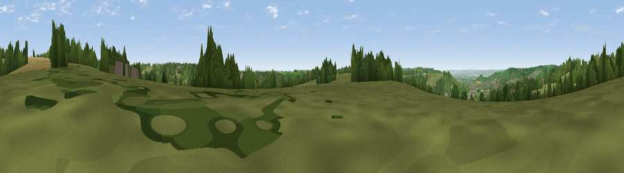

Viewpoint near Eastcombe
#21416 in England · top 40% of its area beats it · near EastcombeThe view, rendered

A 360° render of this exact spot computed from the terrain model, tree cover and land cover — summer colours, afternoon light, calibrated against photographs of famous viewpoints. Real trees, hedges and buildings will differ in detail.
The panorama
Grey silhouette: terrain skyline in each direction (720 bearings, Earth curvature and refraction included). Dashed green: skyline with trees (+15 m) and buildings (+8 m) as obstacles. Blue strip: how far the ground is visible on each bearing.
Where the view opens
Wedge length = distance to the farthest visible ground on that bearing (vegetation-aware). Rings at 10, 25 and 50 km.
What fills the view
48% grassland · 37% woodland · 8% built-up · 7% cropland
Angular shares of the visible panorama (visual magnitude), not map area. Landscape diversity 0.48 (0–1 Shannon).
Key numbers
More beautiful places nearby
The staircase of upgrades: each row has a higher view potential than everything closer. Driving times are estimates from straight-line distance, calibrated against real road routing — check an actual route before setting out.
| Place | Direction | Drive | Score |
|---|---|---|---|
| Viewpoint near Thrupp | NNW · 1 km | ~3 min | 54.2 |
| Viewpoint near Slad | NNE · 3 km | ~7 min | 55.8 |
| Viewpoint near Selsley | WSW · 5 km | ~11 min | 73.5 |
| Viewpoint near Randwick | WNW · 6 km | ~12 min | 73.7 |
| Viewpoint near Harescombe | NW · 6 km | ~14 min | 74.1 |
| Haresfield Beacon | NW · 7 km | ~14 min | 75.7 |
| Painswick Beacon | N · 8 km | ~15 min | 79.6 |
| Viewpoint near Great Witcombe | N · 10 km | ~20 min | 80.5 |
51.73974, -2.18279 · source: screening · position refined by local search. Computed location — check access rights before visiting.